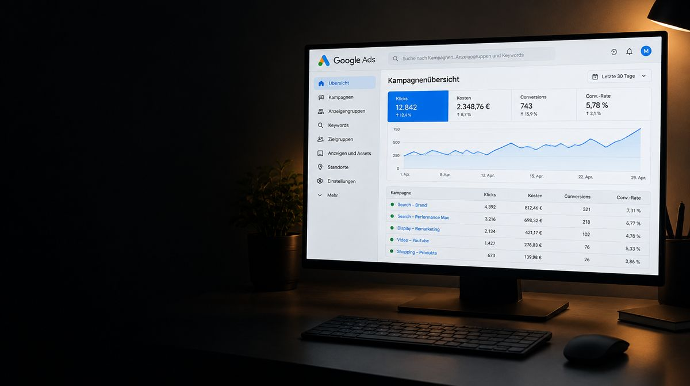
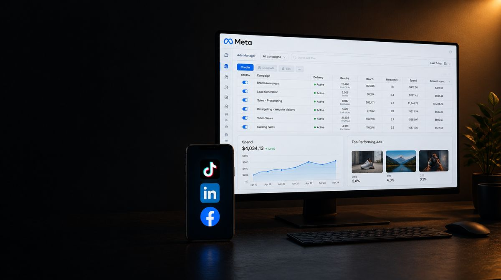
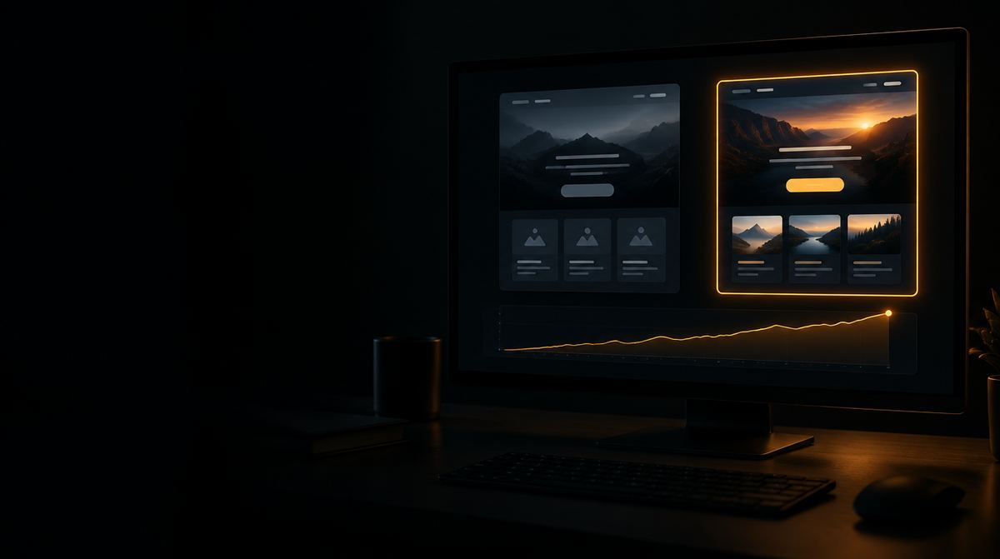

Nous gérons Google Ads, Meta Ads pour Facebook et Instagram, TikTok Ads et LinkedIn Ads auprès d’un seul partenaire. La plateforme retenue dépend de l’offre, du public cible, du matériel disponible et de l’objectif de campagne. Depuis Pratteln, pour les entreprises de la région bâloise, d’Argovie et de toute la Suisse alémanique.
Avant le premier franc vient le tracking. Nous clarifions les actions cibles pertinentes, vérifions les mesures existantes et convenons de la configuration nécessaire. Nous planifions ensuite des tests dans le cadre d’un budget validé et évaluons les résultats avec vous.
Les comptes et le budget publicitaire sont à votre nom. Vous gardez l’accès, les factures et les données, même si un jour nous ne travaillons plus ensemble.
Durée typiqueen continu, résiliable chaque mois après la durée minimale
Ce qui est inclus
Le périmètre en un coup d’œil.
-
Google Ads
Géré par un seul partenaire, avec un budget publicitaire clair.
-

Meta, TikTok et LinkedIn Ads
Pour Facebook et Instagram ; le choix suit l’objectif.
-

Tracking et conversions
Avant le premier franc vient le tracking.
-
Landing pages
De l’annonce jusqu’à la demande qualifiée.
-

Tests A/B
Petits budgets, plusieurs approches en parallèle.
-
Pilotage du budget et rapport mensuel
Une page par mois, sans brouillard de chiffres.
De l’annonce jusqu’à la demande qualifiée
Une campagne ne s’arrête pas au clic. Quiconque réagit à une annonce doit trouver l’offre promise sur la page d’atterrissage et comprendre l’étape suivante. Nous considérons donc l’annonce, la page d’atterrissage, la demande et le retour de votre équipe de vente comme un processus cohérent.
Avant le lancement, nous définissons ce qui fait une demande pertinente : par exemple la prestation souhaitée, la zone d’intervention ou un besoin concret. Ces critères aident à orienter ensuite la campagne vers de réelles opportunités commerciales. De nombreux contacts bon marché valent peu si aucun ne correspond à l’offre.
Quelles tâches pouvons-nous prendre en charge ?
- Google Ads
- Pour les campagnes sur le réseau de recherche, nous accordons thèmes de recherche, annonces et pages d’atterrissage à l’offre. Les termes de recherche et les retours sur les demandes aident à repérer le trafic inadapté et à améliorer le ciblage.
- Meta Ads
- Pour Facebook et Instagram, il faut des messages compréhensibles et des images ou vidéos adaptées. Nous planifions les variantes d’annonces convenues, les approches de ciblage et les tests en lien avec la production de contenu.
- Pages d’atterrissage et mesure
- Nous vérifions le parcours jusqu’à l’action cible convenue. Nous coordonnons les événements nécessaires, les exigences de consentement et la mise en œuvre technique avec vos responsables. Une demande envoyée et un simple clic sur le bouton de contact sont considérés séparément.
- Suivi continu
- L’évolution du budget, le ciblage, les annonces et les résultats disponibles sont analysés. Les modifications doivent répondre à une question compréhensible : par exemple savoir si le message doit gagner en clarté ou si une page d’atterrissage laisse trop de questions ouvertes.
Planifier séparément budget publicitaire et suivi
Le budget publicitaire paie la diffusion sur les plateformes. S’y ajoutent la conception, la configuration, le matériel publicitaire, le suivi et, le cas échéant, une nouvelle page d’atterrissage. Ces éléments doivent figurer séparément dans l’offre. Vous voyez ainsi ce qui est réellement investi dans la portée et quel travail rend la campagne possible.
Notre guide sur le budget Google Ads explique la planification des budgets journaliers et mensuels ainsi que la différence entre coût par contact et coût d’acquisition client. Pour la planification annuelle globale, il est complété par le guide sur le budget marketing.
Collaboration avec votre marketing et votre vente
Votre équipe peut assumer la stratégie, la gestion de marque et le calendrier des campagnes, pendant que nous prenons en charge la mise en œuvre spécialisée. Les comptes existants, les campagnes en cours et les rapports internes sont pris en compte. Pour les validations et les modifications, une responsabilité claire est convenue.
Le retour de l’équipe de vente est décisif : quels contacts étaient joignables ? Lesquels ont débouché sur des échanges sérieux ou des mandats ? Sans cette mise en perspective, une plateforme peut optimiser vers des actions faciles à mesurer alors que la qualité des demandes n’est pas au rendez-vous.
Le suivi continu peut faire partie de votre abonnement marketing. Un lancement de campagne défini ou une landing page peuvent être planifiés comme projet.
Parlons-en
Est-ce adapté
à votre projet ?
Quinze minutes suffisent pour une évaluation honnête, même si rien n’en découle au final.
Prendre rendez-vous- Le tracking est en place avant que l’argent circule
- Ce qui fonctionne reçoit davantage
- Comptes et budget publicitaire à votre nom
- Accès, factures et données restent chez vous
- Une page par mois, sans brouillard de chiffres
Questions fréquentes sur le suivi des ads.
Encore une question ? Écrivez-nous. Nous répondons en général le même jour ouvrable.
Oui. Nous examinons d’abord avec vous les objectifs, la structure, les accès, la mesure et les résultats existants. Nous en déduisons quelles parties sont poursuivies ou retravaillées. Les campagnes en cours ne doivent pas pour autant être reconstruites systématiquement.
Une augmentation devrait reposer sur des résultats solides, un traitement des demandes qui fonctionne et une limite claire pour des coûts acceptables. Quelques conclusions de contrats ou un pic à court terme ne constituent pas encore une base fiable. La capacité et la demande dans l’entreprise doivent aussi pouvoir suivre.
Une planification sérieuse peut fixer des valeurs cibles et des hypothèses. Elle ne permet pas de garantir un nombre fixe de demandes ou un chiffre d’affaires. L’offre, la concurrence, la page d’atterrissage, la mesurabilité et votre traitement des contacts agissent ensemble sur le résultat.